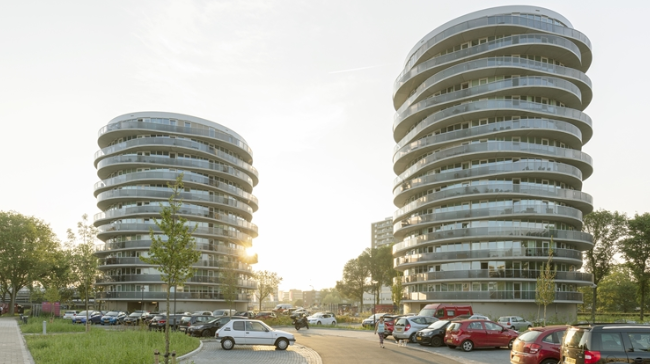
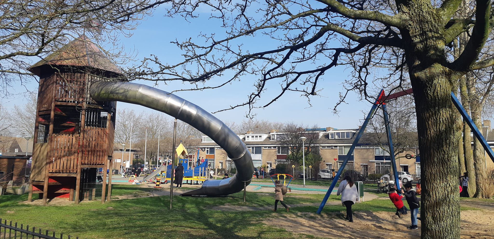

De omgeving europawijk is alleen maar beschrijfbaar met het woord “diversiteit.”
Zo wonen er mensen van allerlei verschillende culturen naast elkaar en is er in geen enkele regio een dominante bevolkingsgroep.
Nederlanders, Marokkanen, Turken, Koerden, Surinamers en noem het maar op.
Dit betekent geleidelijk ook dat er voor uw shop gelegenheden veel diversiteit bestaat.
Zo heb je in de Italiëlaan een turkse bakker, een surinaams restaurant, een marokkaanse supermarkt en een israëlische kledingzaak naast elkaar zitten.
Zo kunt u een avondje surinaams eten de volgende dag turks en een dag daarna marokkaans.
Dit soort fenomenen zijn de normaalste zaken hier in europawijk.
Op het gebied van bedrijven in de wijk zijn er vooral veel supermarkten, restaurants, kledingszaken en bouwbedrijven.
De supermarkten zijn vaak ook gericht op de mensen die er wonen, zo is er de ADL supermarkt wat een turkse supermarkt is.
Hier komen voornamelijk mensen met een buitenlandse achtergrond heen, omdat er qua producten voor hen veel meer te vinden valt.
De bouwbedrijven zijn in europawijk en omstreken erg actief, omdat de gemeentes veel nieuwbouw bij laat bouwen met betrekking tot het actuele woningentekort.
Men denk dat naarmate de stad overbevolkt raakt op het gebied van woningen, dat schalkwijk steeds populairder zal worden.
Zo wordt het bekende winkelcentrum schalkwijk binnekort uitgebreid met een bioscoop en worden er steeds meer appartementen bij gebouwd.
Wij garanderen u niks, maar als we naar de trend kijken zou het nog wel kunnen dat europawijk het nieuwe hartje wordt van Haarlem.
Over hartjes gesproken, er zijn in europawijk diverse sportactiviteiten om te beoefenen in de sport-sectie van de navigatie bar kunt u hier meer over vinden.
als u kinderen heeft is europawijk ideaal, er zijn namelijk ongelooflijk veel speelplekken.
Waaronder de eenhoorn wat een speelparkje is met glijbanen, schommels en nog veel meer attracties. Verder zijn er ook nog de speelplekken en de talloze voetbalkooien die er om de paar 100 meter wel te vinden zijn.
Qua kinderactiviteiten zijn er ook nog organisaties zoals de ringvaart waar u langs kunt en hier kunnen uw kinderen knutselen en schilderen en nog veel meer.

